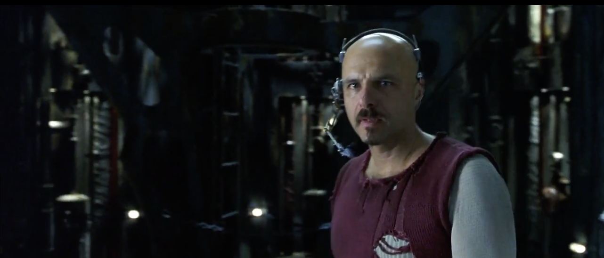
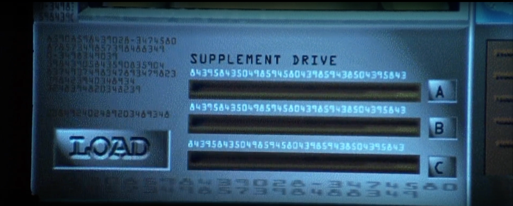
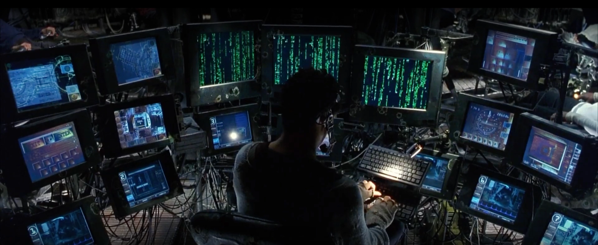
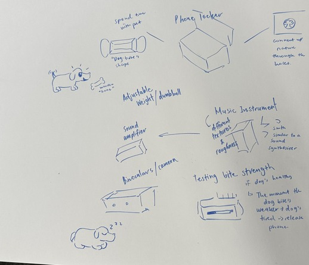
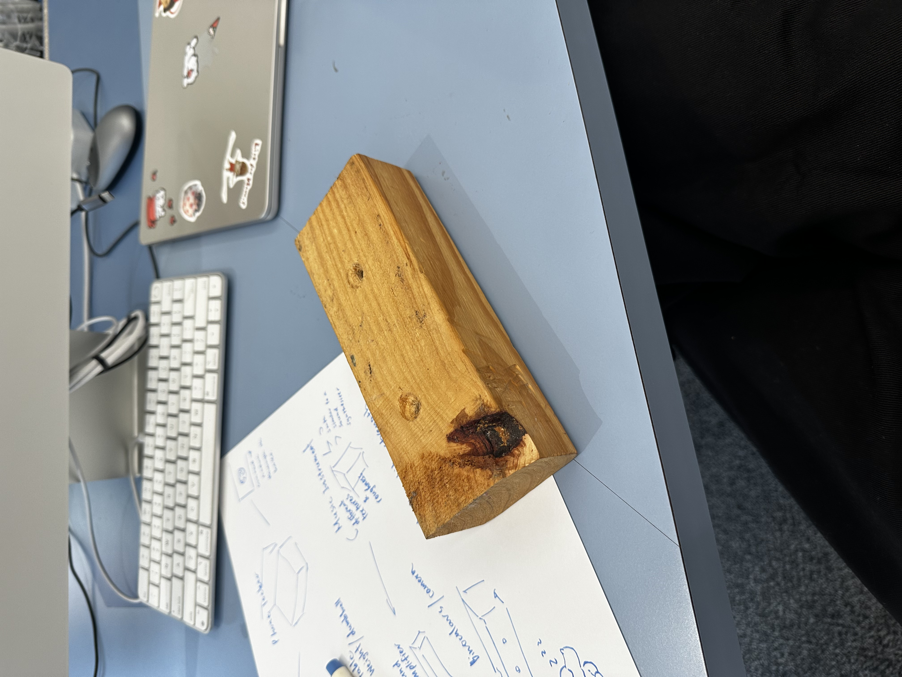
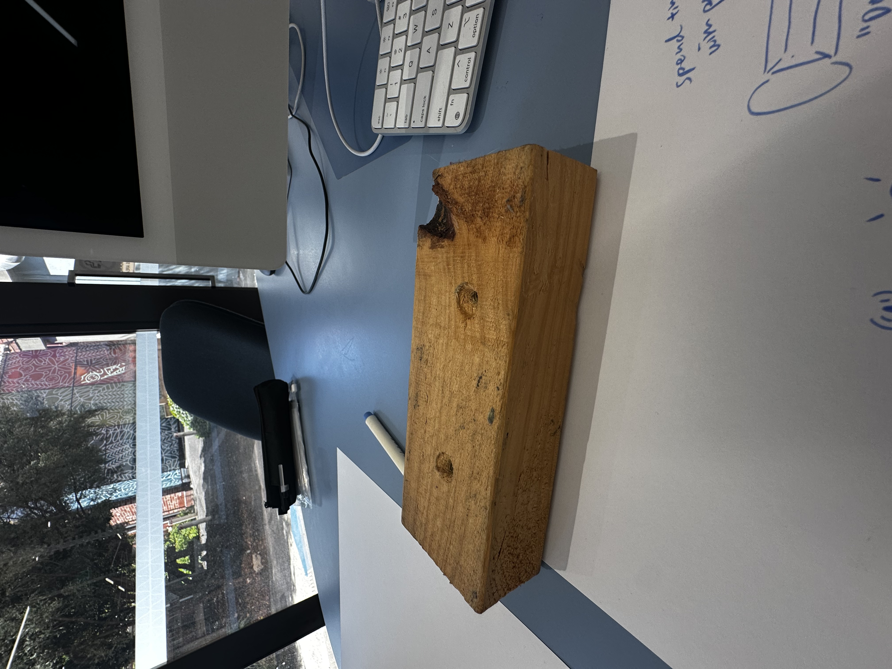
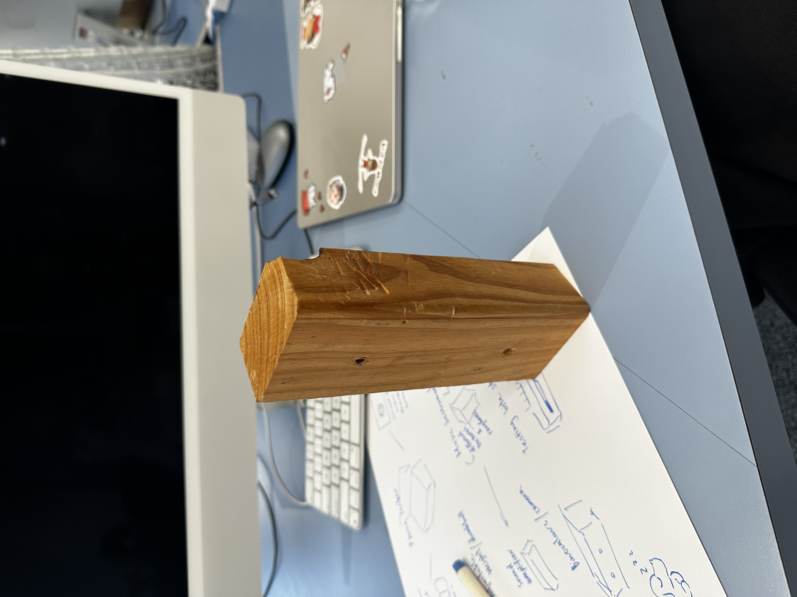
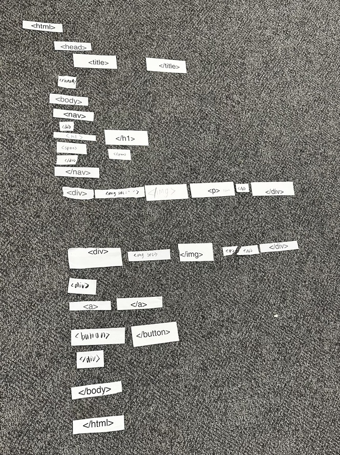

HOME
Week 1
*****************************************
*****************************************
*****************************************
Analyzing The Matrix
Blurring the lines between users and interfaces
To me, this movie expands on the boundaries between the user and the interface, and sort of strengthens that bond but also waves at the current reality of it.
Since, you're able to 'customize' yourself, but you're hopping between two worlds which confuses reality and fake.

This is a point where the user becomes the interface

This headset they're wearing becomes the connection between the "fake world" and the "real world"

*Additional screenshots of technology within The Matrix.

Having the 'terminal' point become the point of connection between technology and people

*Additional screenshots of technology within The Matrix.
*****************************************
*****************************************
*****************************************
Gesture Glossary
Reinventing the wheel

A sketch of our idea

Looking at this block, we weren't sure how to make it more significant than it actually was.

We ended up choosing an idea where it could become two things; a dog toy and phone holder.

The inside would be hollowed out and then made into a case, where you could put your phone inside
to follow focus on your dog and play with them; the wooden case would unlock after the dog's bite significantly weakens,
showing that they're tired.
*****************************************
*****************************************
*****************************************
Making my own interface
Understanding how to make and customize a website

I had a bit of fun with it as you can probably tell, that monkey has stayed my favourite photo
for a year now. Though, I did have trouble understanding the positions at the time on how to make
it centered.

This was the outcome of us trying to play 'tag' and getting more
comfortable with the html coding layout